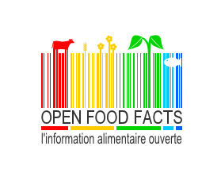
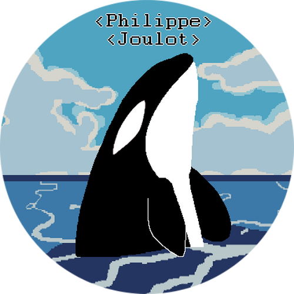

|  |
Open Food FactsDans le cadre d'un hackathon dans les bureaux de Mozilla Paris, j'ai contribué au développement de l'application Firefox OS Open Food Facts. Open Food Facts est un projet collaboratif qui répertorie les produits alimentaires du monde entier. fr.openfoodfacts.org |
|  |
Votre projet bénévole?Si vous avez besoin d'un développeur, n'hésitez pas à me demander en m'expliquant votre projet. S'il me tient à coeur et suivant mes disponibilités, je peux peut être vous apportez mon aide. |